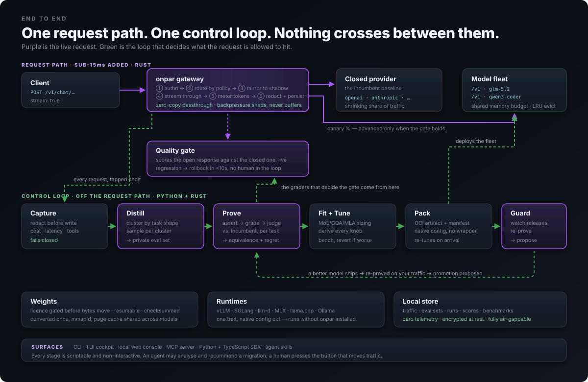
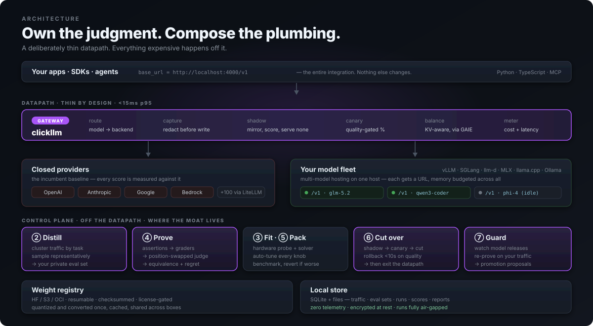

Run open models properly —
and understand why.
Two audiences, one tool. If you've never sized a KV cache, the Learn section teaches the whole stack from first principles. If you have, skip to optimization controls and drive it directly.
Status legend. LIVE works today · PLANNED specified, not built. Every section is marked. We would rather lose you at the legend than at the terminal.
What this is
clickllm helps you choose, deploy, tune, and trust open-weight language models on hardware you control.
Choose
What actually runs on your silicon, at your context and concurrency, with licences that survive legal review.
Deploy
Native config for vLLM, SGLang, llm-d, llama.cpp or MLX — tuned, benchmarked, and runnable without us.
Tune
Every knob derived from your hardware and traffic, then measured and reverted if it didn't help.
Trust
Your traffic becomes a private benchmark, so switching is a decision with evidence rather than a leap.
The kiosk walkthrough LIVE
One command drives everything. You say what you are building in your own words; it reads the machine, picks a model, and explains every choice it made on your behalf. It asks only when it genuinely cannot decide — and while it waits, it answers with its assumption stated out loud rather than with a blank prompt.
$ clickllm build "coding assistant for 20 engineers" Qwen3 30B-A3B (MoE) at q8 on M4 Max — 44.2 GB of 96.0 GB, 7 candidates fit. Engine: mlx. understood: · workload = interactive (from "assistant") · concurrency = 4 (from "20 engineers — about a fifth in flight at once, since people read and think between requests") assuming: · concurrency = 4 · context = 32768 ? How many requests will be in flight at once? MODEL Qwen3 30B-A3B (MoE) @ q8 (44.2 GB) MACHINE M4 Max (detected locally) ENGINE mlx Apple silicon: the CUDA engines cannot run here at all. MLX has the better batching story of the two Metal options. RUN mlx_lm.server --model Qwen/Qwen3-30B-A3B --decode-concurrency 32 --prompt-concurrency 32 --prefill-step-size 2048 NOT EXPRESSED · context_length: mlx_lm.server takes no context-length flag; context is bounded by the model config and by unified memory · speculative: --draft-model needs a draft model repo (org/name), not 'eagle3'; mlx has no method-name speculative flag · memory_fraction: unified memory: there is no separate VRAM pool to reserve a fraction of · quantization: mlx bakes precision into the weights: serve an -q8 repo rather than converting at start-up WORTH CHANGING [high] Measure prefix sharing before accepting this plan. [medium] Try a higher-precision quantisation, or more context. [low] State a TTFT or ITL budget. THEN PROVE IT clickllm prove evalset.json --candidate qwen3-30b-a3b --incumbent <your-current-model> Nothing above has been run. Deployment is yours to trigger, and no eval result moves production traffic without a human.
NOT EXPRESSED is the block worth reading twice. It is every knob the plan wanted
that this engine has no flag for — stated, rather than silently emitted as a flag that would fail
at start-up. Then clickllm run starts it, or clickllm box packages it for
somewhere else.
$ clickllm build "coding assistant for 20 engineers" --save session.json $ clickllm build --resume session.json --concurrency 8 # answers the open question
Nothing above is a wizard. The session is state on disk, not a sequence of screens:
--save writes it, --resume continues it, and an answer you have already
given is not asked again. Answer with a flag, or re-run with a better description — both land in
the same place.
Install
The sizing solver has zero runtime dependencies and runs offline, so the fastest path is to run it without installing anything at all. Python 3.11 or newer.
$ uvx --from clickllm-cli clickllm fit --context 32k --concurrency 8 # run it, install nothing $ npx clickllm fit --context 32k --concurrency 8 # same, if node is what you have $ uv tool install clickllm-cli # or put clickllm on your PATH $ pipx install clickllm-cli $ pip install clickllm-cli $ uvx --from clickllm-cli==0.1.9 clickllm fit # pin a build that stays put $ npx clickllm@0.1.9 fit # the same build, via npm $ clickllm version # what you have, and where it came from $ clickllm upgrade # how to move, for the way you installed it $ curl -fsSL https://dshakes.github.io/clickllm/install.sh | sh # picks whichever of those you already have
The distribution is clickllm-cli; the command is clickllm.
PyPI refused the bare name as too similar to the existing click-llm package, so
pip install clickllm and uvx clickllm both fail and always will. The
--from is what bridges the two names — it is not optional, and every uvx
line in these docs carries one. There is no Homebrew formula.
npx clickllm works. npm allowed the bare name PyPI refused, so the npm
package and the command are both clickllm. It is a shim, not a second
implementation — it execs uvx --from clickllm-cli==<version> clickllm and falls
back to uv tool run then pipx run, so one of those and Python 3.11+ are
still required underneath. npx saves you naming the distribution, not installing
Python. The == is exact by design: npx clickllm@0.1.9 runs
clickllm-cli 0.1.9 and nothing else, so the two registries cannot drift apart
under you.
Learn: why a GPU at all
Generating one token means multiplying your input by every weight in the model. A 30-billion parameter model at 8 bits is ~30 GB of numbers, and you read all of them to produce one token. Do that 50 times a second and you need to move 1.5 TB/s.
That is the whole story: LLM decoding is limited by memory bandwidth, not arithmetic. A GPU is not faster because it computes harder — it's faster because its memory feeds the computation ~20× quicker than a CPU's does.
| Hardware | Bandwidth | What that means |
|---|---|---|
| Typical desktop CPU + DDR5 | ~60 GB/s | a 30 GB model → ~2 tok/s |
| Apple M4 Max (unified) | 546 GB/s | same model → ~15 tok/s |
| NVIDIA H100 | ~3,350 GB/s | same model → ~90 tok/s |
Divide bandwidth by model size and you have a ceiling nobody
can beat. That single division is what clickllm fit reports, and why it calls the
number an estimate: reality lands below the ceiling, never above it.
Learn: where the memory goes

Three things occupy your GPU, and people usually forget the second one.
weights parameters × bits ÷ 8 fixed, the obvious one KV cache grows with context × concurrency the one that surprises people overhead activations, workspace, frag ~8% + a fixed floor
The mistake everyone makes. A 32B model at 4-bit is ~18 GB, so it "fits" in 24 GB — until you serve 8 users at 32K context and the KV cache alone wants 64 GB. Weights are a constant; KV is the variable that bites.
Try it: drag concurrency and watch what breaks
Start at 1 user. Drag to 32. The purple block never moves — the cyan one is what crosses the line. That is the entire lesson, and it is the thing a table cannot show you.
Learn: prefill vs decode

Every request has two phases with completely different characteristics, and almost every performance question comes down to which one you're talking about.
| Prefill | Decode | |
|---|---|---|
| What | read the prompt, build the KV cache | emit tokens, one at a time |
| Parallel? | yes — all prompt tokens at once | no — each token needs the previous |
| Limited by | compute (FLOPs) | memory bandwidth |
| You feel it as | time to first token | tokens per second |
They're so different that large deployments run them on separate machines — that's what "disaggregated prefill/decode" means in llm-d. A long prompt with a short answer is a prefill problem; a short prompt with a long answer is a decode problem. Optimizing the wrong one does nothing.
Learn: KV cache, GQA, and MLA

To avoid re-reading the whole conversation for every new token, the model caches its intermediate keys and values. That cache is the KV cache, and it grows linearly with context and with the number of simultaneous users.
KV bytes per token = 2 × layers × kv_heads × head_dim × dtype_bytes
total KV = that × context_length × concurrent_requests
Three attention schemes, three very different bills
| Scheme | What it stores | Relative KV size |
|---|---|---|
| MHA — multi-head | one K,V per attention head | baseline (largest) |
| GQA — grouped-query | heads share K,V groups | 4–8× smaller |
| MLA — latent (DeepSeek) | one compressed latent per layer | ~50× smaller |
Three silent errors, all of them common.
① Using attention heads instead of kv_heads for a GQA model overestimates KV by up to 8×. ② Using the GQA formula on an MLA model overestimates by ~50×. ③ Sizing a Mixture-of-Experts model on active parameters instead of total: Kimi K3 activates 50B of 2.8T per token, so people assume 50B of memory. All 2.8T must be resident. Sparsity cuts compute, not memory.
clickllm gets all three right, and --explain shows the arithmetic so you can check.
Learn: batching and throughput

Because decode is bandwidth-bound, serving one user wastes the machine — you read 30 GB of weights to produce a single token. Serve 32 users and you read the same 30 GB to produce 32 tokens.
Continuous batching means new requests join the running batch instead of waiting for it to drain. It is the single biggest throughput lever in serving, and it's why aggregate throughput and single-stream speed pull in opposite directions:
| Runtime | Single stream | 32 concurrent |
|---|---|---|
| llama.cpp (Metal) | faster | much slower |
| mlx (Metal) | ~15% slower | ~27× higher aggregate |
Neither is "better". clickllm fit --concurrency N picks on the number you give it,
which is why that flag matters more than it looks.
So how much of the GPU are you actually using?
Uncomfortably little, and it is worth seeing the silicon to believe it. To produce a single word, the GPU reads the entire model out of memory — all 30.5 GB of it — and then does a trivial amount of maths with what it read. The engines are not the bottleneck; the trip to memory is. At one user, about one of an H100's 132 engines has work.

Which is why you serve people in batches: eighteen users share that one read and get eighteen words out of it. And then it stops — a nineteenth needs 72.5 GB on a card that has 72, because every extra person needs their own conversation cache. You run out of memory long before you run out of engines, so making that cache smaller — a lighter quantisation, a shorter context, an MLA model — is the same thing as buying more of the GPU you already own.
This is the whole reason the solver exists. "Will it fit" and "will it be fast" are the
same question asked twice, because the thing that decides both is how much memory the KV cache
leaves you. That is what clickllm fit computes, and what --explain
shows the arithmetic for.
Learn: caching, and the three things people call "the cache"
Say "the cache" in a room of three engineers and you will get three different pictures. They are genuinely different mechanisms with different costs, and conflating them is how people end up tuning the wrong one.
Start with the everyday version. A cache is a shelf by the door. Things you reach for constantly live on the shelf instead of in the loft. The shelf is small and fast; the loft is big and slow. Every cache question is the same two questions: what earns a place on the shelf, and what gets pushed off when it fills.
| What | Holds | Lives for | Why you care |
|---|---|---|---|
| KV cache | Your conversation so far, pre-chewed | One request | It is your memory bill. See KV cache. |
| Prefix cache | The shared start of many requests | Across requests | Free throughput if your prompts share a preamble — and almost nobody turns it on. |
| LRU eviction | Not a cache — the rule for what gets pushed off | — | Decides who gets evicted when memory runs out, and therefore who waits. |
Why the prefix cache is the one you are probably wasting
Every request from an agent starts with the same system prompt — the tools, the rules, the persona. Two thousand tokens of identical text, on every single call. Without a prefix cache the server does that arithmetic again from scratch, every time, forever.
With one, the server recognises "I have computed this exact prefix before", reuses the result, and starts real work at token 2,001. The saving scales with how much of your prompt is shared — which for an agent fleet is often most of it.
This is why prefix_sharing exists in the planner. It is the single
most under-used number in LLM serving: nobody sets it, because no form asks for it, so the
default assumes every request is unique. clickllm advise raises it unprompted
for exactly that reason.
LRU: what gets pushed off the shelf
Least Recently Used. When the shelf is full and something new arrives, throw out whatever you have not touched in the longest time. It is a bet — that what you used recently you will use again soon — and for conversations it is usually a good one, because an active chat gets touched every turn and an abandoned one never does.
shelf full, "D" arrives: before [ A(just now) B(2s ago) C(9 min ago) ] ↑ least recently used after [ D(now) A(just now) B(2s ago) ] C is evicted
The failure mode is worth knowing because it does not look like an error. When an engine evicts a conversation's KV to make room, that user's next message has to recompute the whole history. Nothing crashes. No log line says "evicted". The only symptom is that some requests are mysteriously slow — which is why KV pressure is worth watching before it reaches 100%.
An eviction is a silent tax, not an error. A server at 95% KV utilisation is not
"efficiently used" — it is one busy minute away from thrashing, and the symptom will arrive
as a latency complaint rather than an alert. clickllm advise flags it at 90%.
Learn: quantization

Storing weights in fewer bits shrinks the model and — because decode is bandwidth-bound — speeds it up proportionally. Halving the bits roughly doubles tokens/sec.
| Level | Size vs fp16 | Quality | Use when |
|---|---|---|---|
| fp16 / bf16 | 100% | reference | you have memory to burn — rarely worth it |
| q8 / fp8 | 50% | near-indistinguishable | the default sweet spot |
| q4 | ~28% | small but real degradation | the model otherwise won't fit |
| q3 and below | <25% | noticeable | last resort; re-prove before trusting |
Why we cap at 8-bit by default. fp16 doubles bandwidth cost for quality gains that are negligible at inference time. clickllm picks the highest precision at or below 8 bits that fits, and only goes to 16 when a model publishes nothing smaller.
Learn: pre-training vs post-training
"Training" covers two activities with different costs, different owners, and different answers to "should we?". One of them you will never do. The other one you might, and it is the cheaper one.
The everyday version. Pre-training is raising someone from birth to graduate: years, a fortune, and it gives you a person who knows an enormous amount and has no idea what job they are in. Post-training is the first month at that job: comparatively trivial, and it is what turns general knowledge into "answers the way we answer here".
| Pre-training | Post-training | |
|---|---|---|
| What it does | Learns language and world knowledge from a vast corpus | Shapes behaviour, format and tone |
| Data | Trillions of tokens | Thousands to millions of examples |
| Cost | Millions of dollars, thousands of GPUs | Often one machine, often hours |
| Who does it | Meta, Alibaba, DeepSeek, Mistral… | You, plausibly |
| Result | A base model | An instruct / chat model |
This is why "base" and "instruct" versions of the same model exist. The base model completes text; the instruct model follows instructions. If you download a base model and it rambles instead of answering, nothing is broken — you picked the one that never had the first month on the job.
The post-training family, in the order they were invented
| Name | In one sentence | Needs |
|---|---|---|
| SFT supervised fine-tuning |
Show it good answers and have it imitate them. | Examples of the output you want |
| RLHF RL from human feedback |
Humans rank pairs of answers; the model learns to produce the preferred one. | Human rankings, plus a reward model — expensive and fiddly |
| DPO direct preference optimisation |
The same "learn what people preferred", without the reward model. Simpler, and now the common default. | Pairs of better/worse answers |
| Distillation | Have a small model imitate a big one's outputs. | Outputs from the model you are replacing |
Distillation is the one this product cares about, and it is a happy accident.
If you are migrating off a closed API, you have been paying for that model's answers to your
own traffic — and a captured log of those answers is a distillation dataset. You
already bought the training data. That is what clickllm's post-training module
proposes: train the open model on your incumbent's real answers to your real prompts.
And the honest caveat. Check the incumbent's terms — several closed providers forbid using their outputs to train a competing model. Also, distillation narrows the gap; it does not always close it. Where the gap is wide, the honest recommendation is to stay on the incumbent, which is what the module actually returns.
Learn: LoRA and adapters
The cheapest personalisation there is: one copy of the model, many behaviours, swapped per request.
The everyday version. Fine-tuning a whole model is repainting a house to change the mood of one room. LoRA is hanging a different picture on the wall. The house is untouched and shared; the picture is small, cheap, and you can swap it in seconds.
Technically: instead of updating all 70 billion weights, you freeze them and train a pair of much smaller matrices that adjust the result. The adjustment is a few megabytes against tens of gigabytes of frozen base.
full fine-tune 70B weights changed ~140 GB per variant hours-to-days on many GPUs LoRA adapter 70B weights frozen ~10-200 MB each often minutes on one GPU
The consequence is the interesting bit. Because the base is shared and frozen, one server can hold the base once and serve many adapters over it — support-voice, SQL, summariser — choosing per request. Ten specialised models for barely more memory than one.
Rank is the one knob worth understanding. It sets how much the adapter is allowed to change: higher rank means more capacity and a bigger file. 8–16 is a normal starting point; 64+ is for genuinely hard shifts. vLLM only accepts specific values (1, 8, 16, 32, 64, 128, 256, 320, 512), so clickllm rounds up to the next accepted one — rounding down would refuse to load your adapter rather than merely wasting a little memory.
The trap that costs throughput silently. Loading eight adapters does not mean eight
can run in one batch. Both engines cap adapters-per-batch, and both default it low — vLLM's
--max-loras defaults to 1. Load eight, leave the cap alone, and seven of
them serialise. Nothing errors; throughput is just a fraction of what you paid for. clickllm
derives that cap from your concurrency instead of leaving it at the default.
SGLang counts the base model in the same budget, so N adapters need
--max-loras-per-batch N+1 — set it to N and one adapter quietly starves. Same
intent, different arithmetic, which is why the flags are generated rather than remembered.
Learn: speculative decoding

A small "draft" model guesses several tokens ahead; the real model verifies them in one pass. Accepted guesses are free. Output is identical — it's a speed trick, not a quality trade-off.
It is not free at scale. EAGLE-3's headline "2–3×" is a single-stream figure. At realistic serving concurrency expect ~1.3–1.8×, and past batch ~32 the acceptance rate falls far enough that you pay for two forward passes and go slower.
clickllm disables it above that cliff automatically and prints why. In the walkthrough above, it was enabled, measured, found to cost 8%, and reverted.
Learn: the serving stack
An "inference engine" is the program that actually runs the model. They differ in what they optimize and, critically, in what hardware they support.
| Engine | Hardware | Best at |
|---|---|---|
| vLLM | CUDA / ROCm | the default. PagedAttention, continuous batching, widest support |
| SGLang | CUDA | RadixAttention — reuses shared prompt prefixes, ideal for agents |
| llm-d | CUDA, multi-node | disaggregated prefill/decode + KV-cache-aware routing at fleet scale |
| llama.cpp | everything | best single-stream, widest model coverage, runs anywhere |
| mlx | Apple Metal | continuous batching on Apple Silicon |
| Ollama | everything | zero-config daemon, configured by environment rather than flags |
vLLM, SGLang and llm-d do not run on Apple Silicon. They are CUDA/ROCm-first. On a Mac
the real options are mlx, llama.cpp, and Ollama. Any guide telling a Mac user to
pip install vllm has not checked.
Learn: TPUs and other silicon

A TPU is not a GPU with different branding. Three differences change how you size and deploy, and all three are load-bearing:
| What | Why it matters |
|---|---|
| XLA compiles for static shapes | The continuous batching that makes vLLM fast on CUDA assumes shapes change per step. On TPU the graph is compiled, so the same trick is a different implementation with different characteristics — not a flag you flip. |
| Memory is per host, and hosts do not combine | vLLM does not support multi-host serving on GKE. A v6e host holds 256 GB; a model needing more is out of reach rather than a sharding problem. |
| The engine is a different engine | vLLM TPU lowers through JAX via the tpu-inference plugin instead of
running CUDA kernels. Same CLI, its own feature matrix. |
Check the support matrix before committing hardware. vLLM lists v5e, v6e and v7x as recommended; v3, v4 and v5p are experimental. MLA attention, XL MoE and vision encoders are listed as still maturing — so a DeepSeek-family model, which is MLA, is exactly the case to verify rather than assume. clickllm surfaces each of these as a plan note rather than quietly picking the hardware for you.
SGLang, llm-d and llama.cpp have no TPU path at all, so clickllm will never offer them there — emitting a command that cannot start is worse than emitting none.
Learn: kernel-level work
Below the engine there is one more layer: the CUDA kernels that actually do the arithmetic. clickllm does not write them — out-engineering vLLM's kernel authors is not the gap, and a custom attention kernel maintained against upstream churn is a permanent tax whose failure mode is subtle numerical drift that presents as a model quality problem.
What it does give you is the seam and the thing nobody else does: a way to prove your kernel actually helped.
Where a kernel plugs in
vLLM discovers plugins through standard Python entry points, so a kernel arrives as a normal package rather than a fork or a patched image. The group you pick decides what your callable must return, and getting it wrong means a plugin that loads and does nothing:
| Entry-point group | Registers | Your function returns |
|---|---|---|
vllm.general_plugins | custom ops, out-of-tree models | nothing — side effects only |
vllm.platform_plugins | a whole out-of-tree device | the platform class's FQN, or None if it can't run here |
vllm.stat_logger_plugins | a metrics logger | the entry point is the class |
vllm.io_processor_plugins | prompt/output processing | the IOProcessor class's FQN |
vllm.endpoint_plugins | extra HTTP routes | routes — not loaded by default |
$ clickllm kernel fused-rmsnorm --speedup 1.18 --drift "fp16 reduction order" wrote fused-rmsnorm/pyproject.toml entry point in the right group wrote fused-rmsnorm/fused_rmsnorm/__init__.py a re-entrant register() wrote fused-rmsnorm/PROVING.md the half that decides whether it ships Loading is the easy half. fused-rmsnorm/PROVING.md is the other one.
The constraint that catches everyone: register() must be re-entrant.
vLLM loads plugins in every process it spawns, so under tensor parallelism your
function runs once per worker. A register() that appends to a list, or raises on a
second call, breaks the moment --tensor-parallel-size exceeds 1 — and the error
surfaces far from the cause.
The three things people get wrong
| Mistake | Why it bites |
|---|---|
| Benchmarking at batch 1 | A kernel that is 1.4× faster single-stream routinely delivers nothing under real batching, because the bottleneck moved. Exactly the trap speculative decoding sets. Measure at your concurrency. |
| Measuring speed, not output | A kernel that is 1.4× faster and changes one logit in ten thousand is not a 1.4× win — it is an unreviewed model change. Almost anything touching floating-point reduction order changes results; the question is whether it changes them enough to matter, and that is a statistical question with a confidence interval, not a diff. |
| Mismatched CUDA | A PyTorch built against a different CUDA than the nvcc on your PATH will
compile your op and then fail to load it with an undefined symbol naming nothing useful.
The devcontainer checks this on first run rather than letting you debug the wrong thing. |
A development environment that checks itself
.devcontainer/ brings up NVIDIA's PyTorch image with Nsight Compute and Nsight
Systems, and on first run verifies the toolkit matches torch, warns if it doesn't, and reports
whether the profilers are present. It also sets --shm-size=16g, because Docker's
64 MB default produces a bus error that looks convincingly like a kernel bug.
# the workflow the environment exists for clickllm kernel my-kernel a package, not a fork # …write the kernel… ncu --set full python bench.py measure, don't guess clickllm prove --against base.json did it change the OUTPUT?
The last step is the one usually skipped, and the only one that can tell a genuine 1.4× win from an unreviewed model change. It is the same machinery that decides whether an entirely different model is equivalent — and a kernel is a far smaller perturbation than that, so if the loop can settle the big question it can certainly settle this one.
Getting a recommendation LIVE
Recommendations combine three inputs: your hardware, your workload, and current capability rankings. None alone is enough — a leaderboard doesn't know your GPU, and your GPU doesn't know which model is good.
$ clickllm fit --context 32k --concurrency 8 M4 Max · 16 cores · 128 GB · 546 GB/s usable for inference: 96 GB raise to ~118 GB with: sudo sysctl iogpu.wired_limit_mb=120586 FEASIBLE at 32,768 context, concurrency 8 model quant weights kv total free ~tok/s license ---------------------------------------------------------------------------------------- Qwen3 32B q4 17.2G 64.0G 84.1G 11.9G 21 Apache-2.0 OK Qwen3 30B-A3B (MoE) q8 28.4G 24.0G 56.2G 39.8G 119 Apache-2.0 OK Mistral Small 24B q8 22.0G 40.0G 65.2G 30.8G 17 Apache-2.0 OK Phi-4 14B q8 13.7G 50.0G 66.3G 29.7G 27 MIT OK Llama 3.1 8B q8 7.5G 32.0G 41.6G 54.4G 49 Llama 3.1 ! NOT FEASIBLE Gemma 3 27B weights fit (14 GB) but KV at 32,768 ctx x8 needs 124 GB more than available Llama 3.3 70B weights fit (37 GB) but KV at 32,768 ctx x8 needs 80 GB more than available Qwen3 235B-A22B (MoE) weights alone need 123 GB at q4 — MoE sparsity (22B of 235B active) cuts compute, not memory DeepSeek V3 (MoE, MLA) weights alone need 352 GB at q4 — MoE sparsity (37B of 671B active) cuts compute, not memory GLM-5.2 weights alone need 186 GB at q4 — MoE sparsity (32B of 355B active) cuts compute, not memory Kimi K2.7 Code weights alone need 524 GB at q4 — MoE sparsity (32B of 1000B active) cuts compute, not memory Kimi K3 (2.8T MoE) weights alone need 1,467 GB at q4 — MoE sparsity (50B of 2800B active) cuts compute, not memory DeepSeek V4 Pro weights alone need 838 GB at q4 — MoE sparsity (45B of 1600B active) cuts compute, not memory MiniMax M3 weights alone need 239 GB at q4 — MoE sparsity (46B of 456B active) cuts compute, not memory runtime -> mlx continuous batching on Metal; at concurrency 8 aggregate throughput dominates, despite ~15% lower single-stream than llama.cpp clickllm fit --explain <model-id> # show the arithmetic
The NOT FEASIBLE block is the useful half — it tells you why, which is usually the thing you actually needed to know. It separates the two failures that look identical from the outside: weights that do not fit at all, and weights that fit while the KV cache for your context and concurrency does not.
Seeing the arithmetic
$ clickllm fit --explain qwen3-30b-a3b --concurrency 8 Qwen3 30B-A3B (MoE) @ q8, 32,768 ctx, concurrency 8 weights 30.5B params x 8 bits / 8 = 28.4 GB (MoE: ALL experts resident) kv cache 98,304 B/tok x 32,768 tok x 8 = 24.0 GB (GQA) overhead 8% of weights + 1.5 GB floor = 3.8 GB -------------------------------------------------------------- required 56.2 GB usable 96.0 GB headroom 39.8 GB decode is bandwidth-bound: 3.1 GB read/token (3.3B active) at 72% of peak ~119 tok/s single-stream (roofline estimate, not measured) verdict: FITS
Leaderboard awareness PLANNED
Capability rankings move weekly. clickllm tracks published leaderboards and release feeds, then filters them through your constraints — a model topping every chart is irrelevant if it needs 1.4 TB of memory.
Leaderboards build a shortlist, never a decision. Public benchmarks are not your traffic. They narrow 41 models to 7; stage ④ decides between those 7 using your own prompts.
Managing models LIVE
There is no clickllm pull, and that is deliberate. The serving engine
fetches its own weights — vLLM and MLX both do, and both do it better than a second downloader
would. So clickllm resolves which repo, and the engine moves the bytes.
$ clickllm models # the catalogue, with licences id params active ctx license ------------------------------------------------------------------ llama-3.1-8b 8.03B - 131,072 Llama 3.1 ! phi-4-14b 14.7B - 16,384 MIT OK mistral-small-24b 23.6B - 32,768 Apache-2.0 OK gemma-3-27b 27.4B - 131,072 Gemma ! qwen3-30b-a3b 30.5B 3.3B 131,072 Apache-2.0 OK qwen3-32b 32.8B - 131,072 Apache-2.0 OK llama-3.3-70b 70.6B - 131,072 Llama 3.3 ! qwen3-235b-a22b 235B 22B 131,072 Apache-2.0 OK glm-5.2 355B 32B 1,000,000 MIT OK minimax-m3 456B 46B 1,000,000 MIT OK deepseek-v3 671B 37B 131,072 MIT OK kimi-k2.7-code 1000B 32B 262,144 Modified MIT ! deepseek-v4-pro 1600B 45B 1,040,000 MIT OK kimi-k3 2800B 50B 1,000,000 Modified MIT !
OK is a licence with nothing to accept. ! is a
conditional one — Llama's 700M monthly-active-user cap measured at the parent corporate entity,
Gemma's use policy, Kimi's attribution clause. It is flagged before you plan around the model
rather than after. Unknown licences fail closed: a missing licence field is not
permission.
Serving one, here LIVE
Resolve the weights repo, choose the engine this machine can actually run, start it, and wait for
healthy. --dry-run stops before starting anything and prints the exact command, which
is the form worth reading first.
$ clickllm run qwen3-30b-a3b --dry-run MODEL Qwen3 30B-A3B (MoE) @ q8 (44.2 GB of 96.0 GB usable) WEIGHTS mlx-community/Qwen3-30B-A3B-8bit (confirmed; 1 candidate(s) checked) ENGINE mlx Apple silicon: the CUDA engines cannot run here at all. MLX has the better batching story of the two Metal options. ENDPOINT http://127.0.0.1:8000/v1 SPEED ~119 tok/s single-stream (roofline estimate, not measured) RUN mlx_lm.server --model mlx-community/Qwen3-30B-A3B-8bit --decode-concurrency 32 --prompt-concurrency 32 --prefill-step-size 2048 --host 127.0.0.1 --port 8000 NOT EXPRESSED · context_length: mlx_lm.server takes no context-length flag; context is bounded by the model config and by unified memory · speculative: --draft-model needs a draft model repo (org/name), not 'eagle3'; mlx has no method-name speculative flag · memory_fraction: unified memory: there is no separate VRAM pool to reserve a fraction of · quantization: mlx bakes precision into the weights: serve an -q8 repo rather than converting at start-up NOTES · mlx is not installed here, so its flags could not be checked against the binary — install it with `pip install mlx-lm` · weights repo came from the local cache; nothing was fetched to plan this · the engine downloads the weights itself on first start; this does not --dry-run: nothing was started.
Drop --dry-run and it starts. --quant, --context,
--concurrency, --host and --port override the derived
choices; nothing binds off loopback unless you ask it to.
A refusal names the shortfall and the next step. clickllm run glm-5.2 on a
128 GB laptop answers “even at q4 it needs 248.4 GB against 96.0 GB usable — short by
152.4 GB”, and points at clickllm where and clickllm host. It does
not start something that will die at load.
What the engines left on your disk LIVE
Proving six candidates is a sweep, not a download: each launch costs 30–45 GB in Hugging Face's
cache and nothing tracks it. clickllm cache reads that cache — it is not a second
store — and can reclaim space without destroying the incumbent you are measuring against.
$ clickllm cache ~/.cache/huggingface/hub 37.0 GB 3.1d mlx-community/Llama-3.3-70B-Instruct-4bit 30.5 GB 11.4d Qwen/Qwen3-32B 28.4 GB 0.2d mlx-community/Qwen3-30B-A3B-8bit 13.7 GB 38.6d microsoft/phi-4 109.6 GB in 4 repos · 646.0 GB free on disk clickllm cache pin <repo> # never evict this one clickllm cache evict --budget 200G # show what would go $ clickllm cache pin mlx-community/Qwen3-30B-A3B-8bit pinned: mlx-community/Qwen3-30B-A3B-8bit $ clickllm cache evict --budget 60G would delete 3 repos, freeing 81.2 GB: 13.7 GB 38.6d microsoft/phi-4 30.5 GB 11.4d Qwen/Qwen3-32B 37.0 GB 3.1d mlx-community/Llama-3.3-70B-Instruct-4bit 109.6 GB -> 28.4 GB (budget 60.0 GB) kept, pinned: mlx-community/Qwen3-30B-A3B-8bit nothing deleted — re-run with --yes
Nothing is deleted without --yes. A pinned repo never enters a plan,
and if the budget cannot be met without touching one the plan comes up short and says so rather
than quietly widening. "Least recently used" here is the newest of each file's atime and mtime —
the Hub keeps no access log, so that is a calibration knob, not a truth, and it is why a human
reads the list first.
Somewhere it does not fit LIVE
A 355B model does not run on a laptop. clickllm host ranks rented shapes that can
serve it, free tiers first, and shows the ones that cannot alongside the reason.
$ clickllm host glm-5.2 GLM-5.2 · 355B (32B active, MoE) · MIT at 32,768 context, concurrency 4 provider shape quant total ~tok/s $/hr $/Mtok --------------------------------------------------------------------------------------- Hugging Face Inferen 4x H100 320 GB q4 248.4G 476 $18.00 $10.51 Hugging Face Inferen 8x H200 1128 GB fp8 404.6G 751 $40.00 $14.80 NOT AVAILABLE Hugging Face Spaces FREE TIER — largest shape is ZeroGPU xlarge (full RTX PRO 6000, 96 GB) — 86 GB usable, and GLM-5.2 needs 248 GB at q4. Short by 162 GB RunPod (Pods) largest shape is B200 180 GB — 173 GB usable. Short by 76 GB Modal largest shape is B200 180 GB — 173 GB usable. Short by 76 GB Vast.ai largest shape is H200 141 GB — 127 GB usable. Short by 121 GB Together AI (Dedicat largest shape is HGX B200 180 GB — 173 GB usable. Short by 76 GB Fireworks AI (On-dem largest shape is B200 180 GB — 173 GB usable. Short by 76 GB Google Colab (free t FREE TIER — excluded by Colab's own terms, not by its memory: the free tier disallows "file hosting, media serving, or other web service offerings not related to interactive compute with Colab". A tunnelled inference endpoint is exactly the disallowed shape Prices read 2026-07-28 from each provider's own page; every source URL is in the detail below. They move. Re-read the source before committing spend — nothing here checks it for you. clickllm host glm-5.2 --write ./deploy # emit the deploy artifact clickllm host glm-5.2 --free-only # only what costs nothing Nothing was written, nothing was started, no provider was contacted.
The $/Mtok column assumes the machine is saturated single-stream, so
real cost is higher. Throughput is a roofline estimate. Both are labelled that way in the output
for the same reason the NOT FEASIBLE block exists: a number without its
confidence is worse than no number.
Deploying LIVE
You name a model. Every knob is derived — see optimization controls for the
full list and how to override any of them. There is no --target flag, because you do
not pick one: clickllm box solves every host class at once and writes the
ones that fit.
Inference in a box
A box is a portable, tuned artifact: manifest, weights lock, per-target bindings, and the benchmark evidence behind the tuning. It ships as a standard OCI artifact through any registry.


box applies this at build time,
per host class; on arrival it is the operator's step.$ clickllm box qwen3-30b-a3b --write ./deploy --ref ghcr.io/acme/triage:v3 BOX qwen3-30b-a3b · Qwen3 30B-A3B (MoE) PROOF none — no receipt was supplied, so this box carries no quality claim TARGETS linux-cuda vllm @ q8 on NVIDIA H100 80 GB SXM ~731 tok/s single-stream — roofline estimate, not measured linux-rocm vllm @ q8 on AMD MI300X 192 GB ~1156 tok/s single-stream — roofline estimate, not measured darwin-metal mlx @ q8 on Apple M4 Max 128 GB ~119 tok/s single-stream — roofline estimate, not measured WEIGHTS Qwen/Qwen3-30B-A3B @ ad44e777bcd1 mlx-community/Qwen3-30B-A3B-8bit @ 7d5b2e500d96 WROTE (12 file(s) to ./deploy) manifest.yaml model, quant, tuned knobs, provenance weights.lock repos and revision SHAs — nothing vendored bench.json roofline estimates, explicitly not measurements README.md what was chosen and why targets/linux-cuda/Dockerfile targets/linux-cuda/docker-compose.yml targets/linux-cuda/kubernetes.yaml targets/linux-rocm/Dockerfile targets/linux-rocm/docker-compose.yml targets/linux-rocm/kubernetes.yaml targets/darwin-metal/launch.json targets/darwin-metal/serve.sh PUSH cd ./deploy oras push ghcr.io/acme/triage:v3 --artifact-type application/vnd.clickllm.box.v1+json \ manifest.yaml:application/yaml weights.lock:application/yaml \ bench.json:application/json README.md:text/markdown targets cosign sign ghcr.io/acme/triage:v3 # optional, and the reason OCI was chosen docker build -t ghcr.io/acme/triage:v3-linux-cuda targets/linux-cuda \ && docker push ghcr.io/acme/triage:v3-linux-cuda Run these yourself. clickllm holds no registry credential, reads no token, and has contacted no registry.
clickllm never pushes. It prints the exact oras and docker
commands and stops. It holds no registry credential and reads no token, so publishing stays an act
you perform with your own credentials — the same reason no eval result moves production traffic on
its own.
A host class the model cannot fit is not built, and named —
clickllm box llama-3.3-70b writes the ROCm target and reports “linux-cuda: not
built — does not fit NVIDIA H100 80 GB SXM: even at q4 it needs 121.4 GB against 72.0 GB usable”.
If no target fits at all, it errors rather than emitting an artifact that cannot run anywhere.
Re-solve on arrival is the operator's step today. Each target is tuned for the host class
it names, and every file says which. The manifest's RETUNE header and the box README
tell you to re-detect, re-solve and re-benchmark on a machine that differs —
ADR-0005's
automatic version is specified, not built. A config tuned for 80 GB
is wrong on 24 GB and catastrophic on a Mac, so the box says so rather than assuming.
Why a box isn't just a container. A Linux container on macOS cannot reach the Apple GPU — the GPU is on-die behind unified memory, Metal has no Linux driver, and no compute-passthrough API exists. So the box is an OCI artifact with a per-host execution binding: a container on Linux/Windows/k8s, a supervised native runtime on macOS. One artifact, one command, one endpoint.
Optimization controls LIVE
No tuning flag is ever required. Every knob below is derived from your hardware
and your stated traffic. There is no --set: you describe the workload, and the plan
follows from it — which is why the inputs, not the knobs, are what you type.
| Knob | Derived from | Input that moves it |
|---|---|---|
| quantization | the memory solve: highest precision that fits | --quant q4 |
| engine (vLLM / SGLang / MLX) | platform, then prefix sharing — RadixAttention past the threshold | --prefix-sharing 0.8 |
| speculative decoding | concurrency; off past the acceptance cliff, where spare compute has run out | --concurrency 8 |
| prefix caching | the prefix-sharing rate you state, against a floor below which the bookkeeping costs more | --prefix-sharing 0.6 |
| tensor parallel | device count and what the solve needs | detected |
max_model_len | the context you plan for, not the model's maximum | --context 32k |
max_num_seqs | concurrency and KV headroom | --concurrency 8 |
| KV dtype, memory utilization | headroom after the solve | derived |
--context and --concurrency are accepted everywhere the planner runs —
build, run, box, host and advise;
--quant on run, box and host;
--prefix-sharing and the latency budgets on build and
advise. One planner sits behind all of them. What an engine has no flag for
is reported under NOT EXPRESSED rather than emitted as a flag that fails at
start-up — --speculative-config eagle3 without a draft checkpoint is not a
configuration, it is a crash with a delay.
What to change, and where production diverged
clickllm advise ranks the changes worth making. Feed it what you have actually
observed with the --seen-* flags and it compares the plan against reality.
$ clickllm advise --context 32k --concurrency 8 --ttft-ms 400 \ --seen-concurrency 31 --seen-kv-utilisation 0.97 M4 Max · mlx PRODUCTION DIVERGED FROM THE PLAN [high] Re-plan for concurrency 31. because: the plan assumes 8 in-flight requests; production is running 31. KV cache, batch limits and the speculative decision were all derived from the smaller number. expect: settings that match the traffic. At this concurrency the current plan is describing a different deployment. [high] Reduce context or concurrency before the cache starts evicting. because: KV cache is at 97% at peak. Past full, the scheduler preempts requests, and the symptom is latency variance rather than an error anyone can grep for. expect: stable tail latency instead of intermittent preemption. WORTH CHANGING [high] Measure prefix sharing before accepting this plan. because: prefix_sharing is 0.00, so prefix reuse is off. An agent or chat deployment with a fixed system prompt is commonly 0.8+, and that prefix is being recomputed on every request. expect: if sharing is real, a large cut in prefill cost — the saving scales with the shared fraction. Estimate, not measured: measure it.
Every item carries its because and its expect. Estimates pick the candidates;
measurement decides — which is what --seen-* is for, and why nothing here claims a
speed-up it has not been shown. It exits nonzero when production has diverged and
zero otherwise, so it works unchanged as a CI or cron probe. It applies nothing.
Gateway & routing LIVE
An OpenAI-compatible proxy that streams through without buffering, meters tokens in flight, and can mirror traffic to a candidate model that is scored but never served.
$ export OPENAI_BASE_URL=http://localhost:4000/v1 # the whole integration
| Phase | Serves | Mirrors |
|---|---|---|
off | incumbent | — |
shadow | incumbent | candidate — genuinely dispatched, never served |
canary N% | N% candidate | the rest, for comparison |
cut | candidate | — |
The local console at http://localhost:4000 shows request volume, per-backend rollup,
p95 latency, and shadow outcomes — including an explicit warning when the candidate is failing,
because a rollout gated on evidence that isn't arriving would otherwise stall silently.
Token counts are never fabricated. When an upstream reports no usage, the console says unreported rather than showing zero. Understating spend is the one direction a cost ledger must not err in.
CLI reference
Everything below is registered today — clickllm --help is the authority, and this
list is checked against it by a test.
## decide clickllm build "coding assistant for 20 engineers" drive the whole loop --context 32k plan for this context length --concurrency 8 plan for this many simultaneous requests --ttft-ms / --itl-ms latency budgets to check the plan against --prefix-sharing 0.8 fraction of prompt tokens shared across requests --on PROFILE plan for another machine; omit to detect this one --save / --resume the session is a file, not a screen clickllm fit what runs on this machine --context 32k plan for this context length --concurrency 8 plan for this many simultaneous requests --explain MODEL show the arithmetic --quiet hide the NOT FEASIBLE section --json machine-readable clickllm where MODEL which hardware can run a given model clickllm models the catalogue with licences clickllm advise what to change, and where production diverged --seen-concurrency, --seen-prefix-sharing, --seen-ttft-ms, --seen-peak-context, --seen-kv-utilisation what you actually observed ## run clickllm run MODEL resolve weights, launch the engine, wait for healthy --dry-run print the plan and the exact command; start nothing --quant q4 force a quantisation; default is the best that fits --host / --port bind address and port; loopback by default clickllm host MODEL where to run a model this machine cannot; free tiers first --free-only only shapes that cost nothing --provider NAME pick this one instead of the cheapest that fits --write DIR emit the deploy artifact clickllm box MODEL build the OCI box: one artifact, every platform --write DIR emit the box here --receipt FILE attach the proof; without it the box claims nothing --ref REF the registry reference the printed push commands use clickllm cache what the engines downloaded, and what to evict pin / unpin REPO never evict this one evict --budget 200G show what would go; needs --yes to delete anything clickllm ui launch the local workbench clickllm desktop install a double-clickable launcher ## trust clickllm prove EVALSET run the eval suite and print the verdict clickllm receipt render or verify a migration receipt clickllm guard check whether a receipt still holds clickllm watch discover new models on a schedule; stages, never publishes clickllm discover trending models not yet in the catalogue ## catalogue clickllm catalog verify catalogue entries against published configs clickllm catalog-add add a model from its published config, no reinstall clickllm catalog-sources where the catalogue's models come from clickllm kernel scaffold a vLLM plugin and its proof plan
The one command that is not here is a cutover. Shadow → canary → cut runs through the gateway, and the step that moves production traffic is yours: nothing in this list has a flag that does it.
Python SDK LIVE
from clickllm import sdk report = sdk.fit(context="32k", concurrency=8) report.best() # highest-capability candidate that isn't slow report.commercially_clean() # permissive licence AND verified architecture print(sdk.explain("glm-5.2")) # the arithmetic
Every candidate carries estimate_basis, so a roofline projection cannot be reported as
a measurement anywhere downstream.
MCP & agents LIVE
$ clickllm-mcp # JSON-RPC 2.0 over stdio, zero dependencies tools: clickllm_fit · clickllm_explain · clickllm_catalog
Read-only by design. cutover_advance and deploy_apply are not
exposed, and a test asserts no tool name contains cutover, apply, deploy,
promote or rollback. An agent may analyse and recommend a migration; a human
presses the button that moves production traffic. That's a trust boundary, not friction.
Architecture


Rust for the datapath and weights path — no GC pauses against a p95 budget, and explicit accounting for GB-scale fleet memory. Python for the control plane, where the ML ecosystem lives. ADR-0007 has the reasoning, including what was rejected.
Something wrong or unclear here? Open an issue — documentation bugs are bugs.